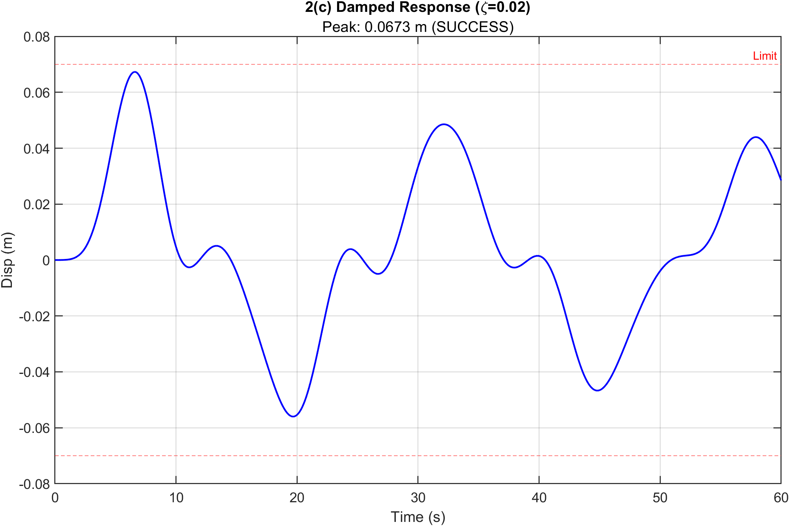
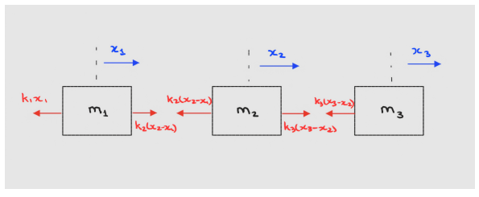
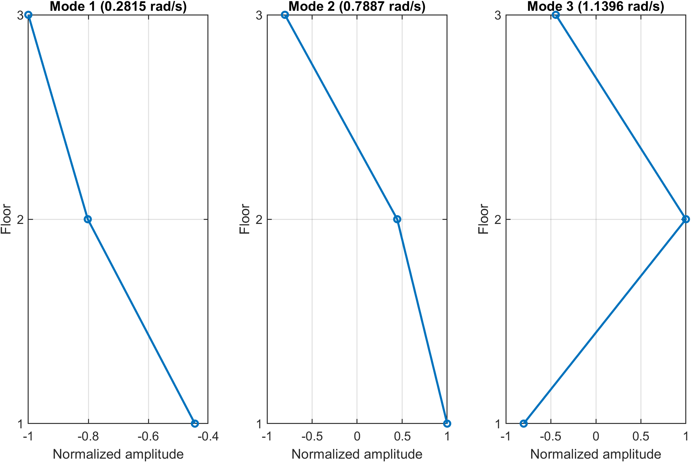
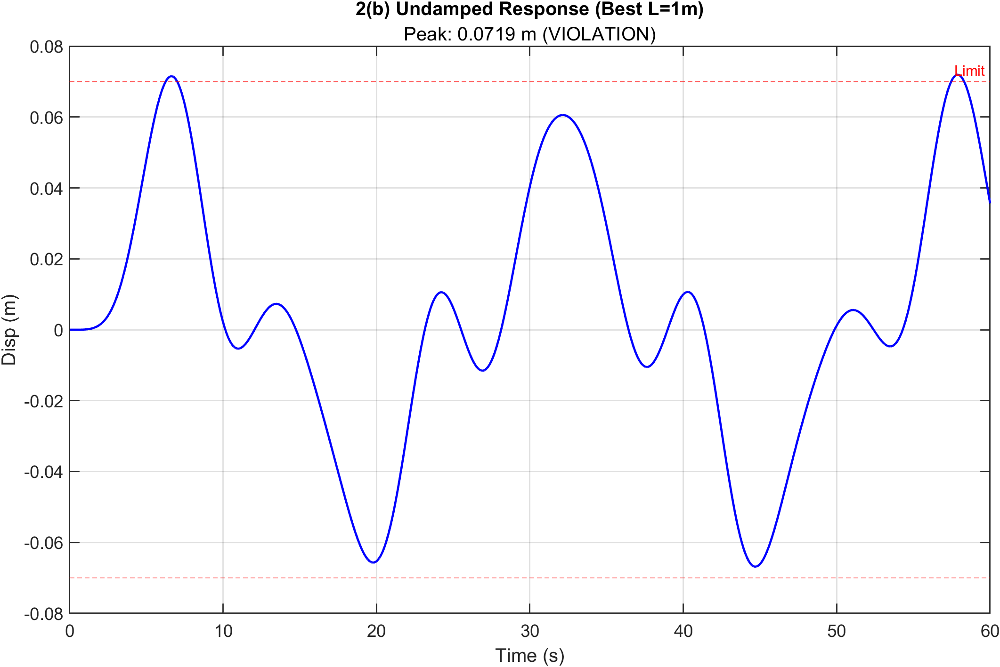

Academic project · Mechanical vibrations
Structural vibration and PTMD analysis.
Modal analysis of a three-degree-of-freedom structure and numerical evaluation of a passive tuned mass damper.

- Structure
- 3 degrees of freedom
- Method
- Euler–Lagrange · eigenanalysis
- Damper
- Passive tuned mass damper
- Tool
- MATLAB
01 · Structural model
Natural frequencies and mode shapes.
I derived the equations of motion for the three-degree-of-freedom structure and used eigenanalysis to calculate its natural frequencies and mode shapes.
The undamped impulse response established the baseline used to evaluate the passive tuned mass damper.


02 · PTMD study
Parameter sweep and response comparison.
MATLAB parameter sweeps were used to select passive tuned mass damper values and compare the damped and undamped responses.

03 · Result and limits
Peak displacement below the implemented criterion.
The selected damper produced a 0.0673 m peak response, below the 0.0700 m criterion implemented in the analysis and about 6.4% below the undamped peak.
The assignment and report use slightly different wording for the acceptance criterion, and the result was not physically validated. The page therefore reports the implemented numerical comparison only.